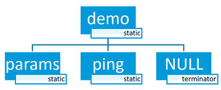
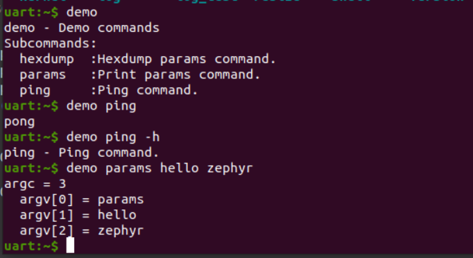

14. Zephyr - Shell
版本：Zephyr v2.4-branch 。
14.1. 概要介绍
Zephyr Shell 组件运行用户为 Shell 命令创建处理函数，是 Unix 风格的 Shell，支持下述特性：
支持多个实例（Segger RTT，UART，DUMMY , ），master 分支还支持 Telnet, USB, SMP。
与日志系统有更好地协作性。
支持静态和动态命令。
支持
Tab键补全。内嵌命令：clear, shell, colors, echo, history, resize 。
使用
↑↓键浏览最近的执行命令。支持文本编辑：
←,→,Backspace,Delete,End,Home,Insert。支持 ANSI 转义字符：
VT100控制光标，ESC[n~控制颜色。支持多行命令。
内嵌显示 Shell 命令帮助信息的函数。（特色）
支持通配符：
*,?。支持元键（meta keys）。
可使用 Kconfig 配置内存使用率。
更详细的介绍可以参考官方 Shell文档。
14.2. 命令
Shell 命令以树形结构进行组织，并且分为以下几种类型：
根命令：被收集且以字母顺序存储在一个特定的段（section）里。
静态命令：数量和语法（syntax）必须在编译期都知道。
动态命令：数量和语法（syntax）可以在编译器不知道。
静态命令
一棵静态命令树如下图所示：

demo 命令是根命令，params，ping 命令都是子命令，而且都是静态命令。命令效果如下：

输入 demo 根命令，若该命令没有处理函数，则会自动显示所有的子命令，以及他们的帮助信息，相当于 demo -h 的效果。输入 demo ping 执行 ping 程序，输入 demo params 执行 params 程序。
上述例程可以在 samples/subsys/shell/shell_module/src/main.c 里找到，关键代码如下：
/* Creating subcommands (level 1 command) array for command "demo". */
SHELL_STATIC_SUBCMD_SET_CREATE(sub_demo,
SHELL_CMD(params, NULL, "Print params command.",
cmd_demo_params),
SHELL_CMD(ping, NULL, "Ping command.", cmd_demo_ping),
SHELL_SUBCMD_SET_END
);
/* Creating root (level 0) command "demo" */
SHELL_CMD_REGISTER(demo, &sub_demo, "Demo commands", NULL);
首先使用 SHELL_STATIC_SUBCMD_SET_CREATE 创建静态子命令数组，其中 sub_demo 是子命令集的名称（此处利用宏构建了一个结构体数组，标识符是 sub_demo）。然后使用 SHELL_CMD 创建具体的子命令，params 是命令语法，也就是需要在 Shell 里输入的；NULL 代表 params 命令下没有子命令了（如有需为指向子命令的数组的指针）；"Print params command." 是帮助信息，添加后缀 -h 或 –help 会自动显示，不需要应用程序手动处理，使用感极佳。cmd_demo_params 是命令的处理函数。ping 命令也是类似的，就不介绍了，最后注意子命令数组需要以 SHELL_SUBCMD_SET_END 结束。
然后使用 SHELL_CMD_REGISTER 来创建根命令，demo 是命令语法，&sub_demo 是之前创建的子命令数组的指针，"Demo commands" 是帮助信息，NULL 表示该命令没有处理函数。
这样就完成了 Shell 静态命令的创建，而且集成了帮助信息，命令层次清晰，使用方便。
与上述命令相关的 API 地址如下：
SHELL_STATIC_SUBCMD_SET_CREATE
除此之外，在创建命令时还有一种方法可以使用：SHELL_CMD_ARG 。
SHELL_CMD_ARG(syntax, subcmd, help, handler, mand, opt)
利用该宏创建的命令会强制检查命令的参数使用满足要求，mand 表示强制（mandatory）需要的参数个数，opt 表示可选（optional）的参数个数，这样的好处是我们可以在应用程序里直接使用参数，而不需要在程序里处理 if (argc < mand) 这类的情况，Shell 组件会自动输出帮助信息来处理。
此处需注意 Shell 组件传入子命令参数时，也会将子命令当作一个参数传递，参考命令 demo params 。
动态命令
动态命令也就是指命令可以动态添加和删除，极其灵活。一个动态命令树如下所示：

由于我还不知道动态命令的具体使用场景，就没有去具体研究，留待以后补充吧。
更多更全面的内容请参考官方 Shell文档。